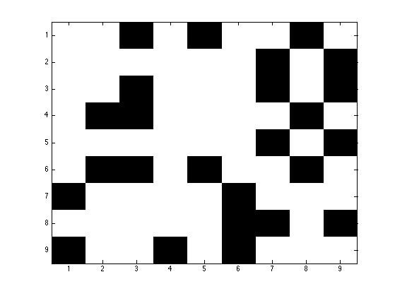
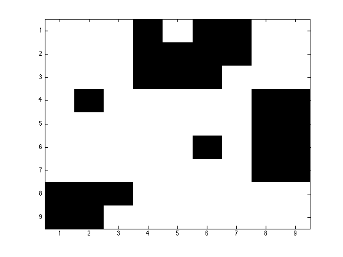

% make graph for figure 1 of IRM paper by Kemp et al %{ % from TR 2004 G = zeros(9,9); G(1,[3 5 7 8 9])=1; G(2, 9) = 1; G(3, [7 8 9])=1; G(4, [2 3 7 8 9])=1; G(5, [7 9])=1; G(6, [2 3 5 7 8 9])=1; G(7, 4)=1; G(8, [6 7 9])=1 %} % FROM AAAI'06 G = zeros(9,9); G(1, [3 5 8])=1; G(2, [7 9]) = 1; G(3, [3 7 9])=1; G(4, [2 3 8 ])=1; G(5, [7 9])=1; G(6, [2 3 5 8 ])=1; G(7, [1 6])=1; G(8, [6 7 9])=1; G(9, [1 4 6]) = 1; figure Gtmp = G; Gtmp(G==0)=1; Gtmp(G==1)=0; imagesc(Gtmp); colormap(gray) printPmtkFigure('irmGraphInput') %graphviz(G) %{ labels = cell(1,9); g{1} = [1 6 4]; g{2} = [8 2 3 5]; g{3} = [9 7]; for i=1:3 for j=1:numel(g{i}) k = g{i}(j); labels{k} = sprintf('g%d', i); end end graphviz(G, 'labels', labels) %} perm = [1 6 4 8 2 3 5 9 7]; GG = size(G); for i=1:9 for j=1:9 GG(i,j)=G(perm(i), perm(j)); end end %graphviz(GG) figure Gtmp = GG; Gtmp(GG==0)=1; Gtmp(GG==1)=0; imagesc(Gtmp); colormap(gray) printPmtkFigure('irmGraphOutput') 